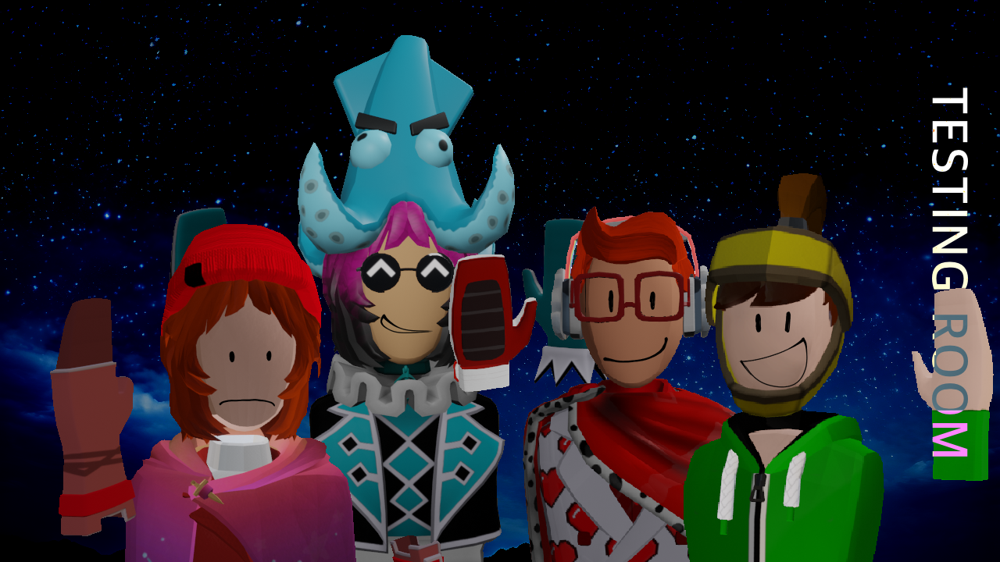

THE DEVS

Amenbreak.mp3
Coded lots of stuff and is the main dev
bleh
Built lots of stuff and is the main builder
Dakota
███████
███████
Amenbreak.mp3
recorded lots of the ost and makes a lot of ideas. cool dude.
:)
recorded some of the ost and makes a lot of ideas. another cool dude.